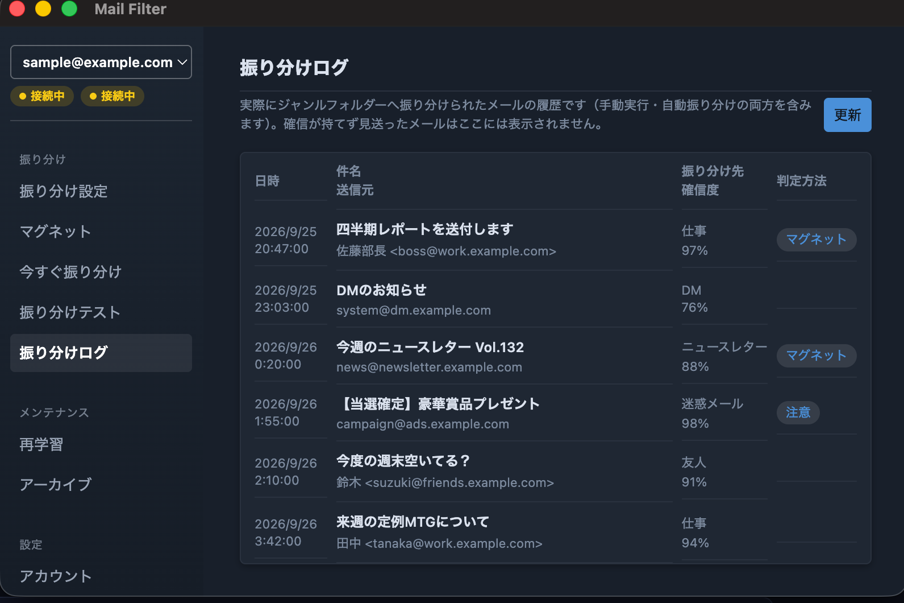

IMAPメールを、ベイズ分類器で賢く自動振り分けするデスクトップメールクライアント。

主な機能
- ベイズ分類器によるジャンル振り分け（友人・仕事・DM など、フォルダ単位で学習）
- SPAMメールの自動判定・振り分け
- IMAPフォルダ構造と連動したジャンル管理・フォルダ作成
- Gmail（OAuth2連携）、Yahoo!、Yahoo!JAPAN、iCloud、AOL、Fastmail、Zoho、その他一般IMAPサーバーに対応
IMAPメールを、ベイズ分類器で賢く自動振り分けするデスクトップメールクライアント。
